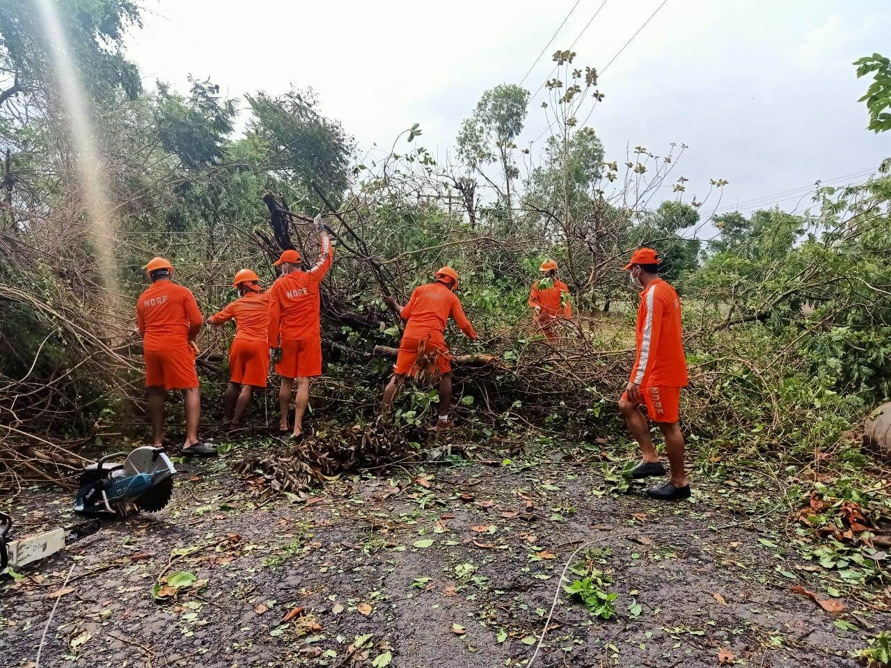

Gujarat


Cyclone Nisarga did not cause any major damage on the southern coast of Gujarat on wednesday afternoon and evening following landfall near Alibaug in Maharashtra. The Gujarat government had evacuated over 63,700 people including 292 pregnant women, from coastal areas of eight districts and 18 teams of National Disaster Response Force (NDRF) and six teams of State Disaster Response Force (SDRF) were deployed for rescue operations. Luckily, the cyclonic storm passed without any major incident and casualties, said state relief commissioner Harshad Patel. “No untoward incident or human injury has been reported so far due to the cyclone. While the wind speed was normal in south Gujarat region, both Valsad and Navsari received just 2 mm and 7 mm rainfall since morning. The situation is under control,” he said. In anticipation of a cyclonic storm making landfall on the Gujarat coast on June 3, the Gujarat government on Monday ordered evacuation of people living in low-lying areas and deployed 10 teams of the National Disaster Response Force (NDRF) in over half a dozen districts. The India Meteorological Department (IMD) said the low-pressure area formed over the Arabian Sea has intensified into a depression and it will further intensify into a cyclonic storm in the next 36 hours. “The (low-pressure) system is around 900km away from Surat at present. We expect the cyclonic storm to hit the southern Gujarat coast near Daman on June 3 evening with a wind speed of 90 to 100 km per hour. “It will bring heavy rainfall in the south Gujarat region on June 3 and 4. It may have some impact in Bhavnagar and Amreli districts of the Saurashtra region as well,” said Director of MET Centre, Jayanta Sarkar. Ahead of the storm, the weather of Bhavnagar suddenly changed on Monday as strong winds coupled with rain lashed the city in the morning. Sudden thunderstorm uprooted trees as well as solar panels at some places in the district, said officials.In view of the cyclonic activity over the Arabian Sea, Chief Minister Vijay Rupani on Monday chaired a high-level meet in Gandhinagar to assess the preparedness of the state machinery to tackle all eventualities. Following the meeting, Mr. Rupani said 10 teams of the NDRF have already taken position in five districts of south Gujarat and Bhavnagar and Amreli districts of Saurashtra to deal with any situation arising out of the cyclone. These five districts of south Gujarat are Surat, Bharuch, Navsari, Valsad and Dang. “These five districts along with Bhavnagar and Amreli have been put on high alert while other districts have been asked to remain alert.“While 10 teams of the NDRF have already taken their position, five teams of the SDRF have been put on a stand-by.I urge people of these areas to remain indoors on June 3 and 4,” Mr. Rupani told reporters.Mr. Rupani said while all fishermen of south Gujarat and Saurashtra have been called back from the sea, salt-pan workers of these regions have been shifted to safer locations.“District collectors have been asked to shift people from low-lying areas to safer places. The collectors have been also asked to make sure electricity supply to COVID-19 hospitals in their respective areas does not get affected. “A control room has been activated in Gandhinagar to monitor the situation,” the Chief Minister said. Gujarat government, however, started evacuating over 78,000 people from four districts located near the coastline and deployed 19 teams of NDRF and SDRF. 13 teams of the NDRF and six teams of the State Disaster Response Force (SDRF) have been deployed at different locations, five more teams of the NDRF will reportedly arrive soon. "A total of 78,971 persons living near the seashore in Valsad, Surat, Navsari and Bharuch districts will be shifted to safer locations. 1,727 villagers have already been shifted," Gujarat Relief Commissioner Harshad Patel told reporters in Gandhinagar on Tuesday. He further said that 140 buildings have been identified as temporary shelters for evacuees in these four districts, adding that rescue teams have been given PPE kits in view of the coronavirus pandemic and they have also been directed to take precautionary measures like maintaining social distancing and providing masks to evacuees at rescue shelters. Gujarat Chief Minister Vijay Rupani on Monday held a meeting with senior officials and took stock of the preparedness of the administration. As per an IMD release, the deep depression over east-central Arabian Sea is currently located around 670 kms away from Surat and it may intensify into a cyclonic storm in the next six hours. "In the subsequent 12 hours, it will turn into a severe cyclonic storm and cross north Maharashtra and adjoining south Gujarat coast between Harihareshwar and Daman, close to Alibaug of Maharashtra during the afternoon of June 3, with a maximum sustained wind speed of 100 to 110 kmph," the IMD added. Meanwhile, Aviation regulator Directorate General of Civil Aviation (DGCA) today issued a circular to airlines and pilots, reiterating its guidelines on adverse weather operations as Cyclone Nisarga approaches the coastal areas of Maharashtra and Gujarat. "Domestic aviation activities have recently been started after a period of two months. Operators and individuals have a challenge at hand in restarting flying after a prolonged period of non-flying and the associated weather at this time of the year across India," The DGCA said in the circular. The DGCA further said that the circular is being issued to operators and pilots to reiterate some existing guidelines on adverse weather operations and suggested measures "to cater for the gap in flying of pilots".Operations at the Mumbai airport, which has been handling 50 domestic flights daily since May 25, are likely to be significantly affected on Wednesday due to the cyclone.